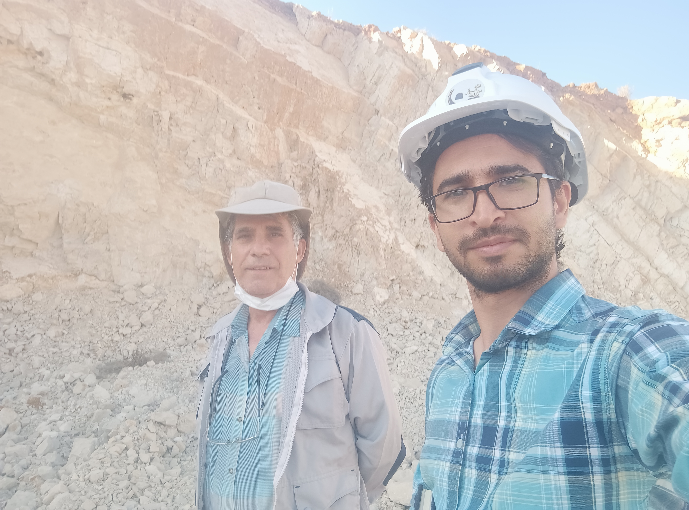

Bergbau
Bergbauprojekte und Praxiseinblicke
Bilder aus bergbaunahen Projekten, Geländeaufnahmen, Maschinen, Einsatzsituationen und praktischen Arbeitsumgebungen.
Dieser Bereich dokumentiert meine praktische Erfahrung aus bergbaunahen Projekten und Tagebaubetrieben. Gezeigt werden Arbeitsumgebungen, Maschinen, Geländeaufnahmen und verschiedene technische Situationen aus dem betrieblichen Alltag.
Aus meiner Berufserfahrung im Bergbau bringe ich Kenntnisse in Abbauplanung, technischer Berichterstattung, Betriebsbeobachtung, Leistungsbewertung und Böschungsstabilität mit. Ergänzt wird dies durch Erfahrung mit Datamine und der Auswertung betrieblicher und geologischer Daten im Projektkontext.


